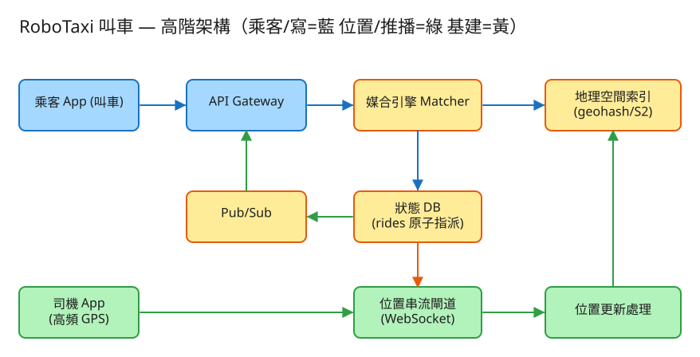

B 即時連線/同步 看故事就懂 輕鬆讀 25 分鐘
你打開 App 按「叫車」，幾秒後螢幕上就出現「ABC-001 號車，2 分鐘後到」，還能看到那台車在地圖上一格一格往你這邊開過來。 RoboTaxi（自駕計程車）做的就是這件事。
聽起來不就是「按一下 → 配一台車」嗎？很簡單啊。記下一筆叫車單確實很簡單。難的是藏在背後的三件事，我們下一節就拆給你看。
「按一下配一台車」之所以難，是因為這張地圖又大、又一直在動、還有別人在搶：
記住這三個難點，後面的設計全部都是在解這三件事。
別被「系統」嚇到。一次叫車，其實就是闖 3 關，一關一關來：
你叫車，系統要先撈出「你附近的空車」。前面說了，不能把 100 萬台車一台台量距離。怎麼辦？
系統用的工具叫 geohash：把地球切成一格一格的小網格，每格一個短代碼，位置相近的代碼開頭一樣。 於是找附近變兩步：
⚠️ 小細節：你可能站在格子的邊緣，最近的車說不定在隔壁格。所以要連旁邊 8 格一起撈，免得漏掉就在你身後那台。
找到候選車了，現在要指派一台給你。難點三來了：隔壁的人可能跟你搶同一台。
系統用的招式叫 CAS（條件更新），白話就是「搶之前先確認還沒被搶」：
👉 這就是整題最關鍵的考點：怎麼保證「同一台車不會被配給兩個人」。答案就是「搶最後一張票」的那一招。
配到車了，你會想盯著它開過來，司機也想看到你在哪。這要靠「即時位置串流」。
這條專線叫 WebSocket（長連線）——像一通不掛斷的電話，雙方隨時能講話，不用每次都重撥（重撥＝一直輪詢，又慢又耗電）。 車子每幾秒回報的新位置，一邊更新地圖索引，一邊推給正在看的你。
工程上的「取捨」聽起來很抽象。換個方式記：這個系統最怕三件事，每個設計都是為了避開某個「怕」。

✏️ 用 Excalidraw 開啟編輯（diagram.excalidraw）白話導讀：
看完上面，這些詞你其實都已經懂了，這裡只是把「工程術語 ↔ 白話」對起來，Part 2 會用到：
| 工程術語 | 白話解釋 |
|---|---|
| geohash | 位置的「郵遞區號」：把地圖切成網格，每格一個代碼，附近的代碼開頭一樣 |
| 地理空間索引 | 一張「哪台車在哪一格」的活地圖，能秒查「附近有哪些車」 |
| haversine | 算地球上兩點實際距離的公式（細篩、排序用） |
| CAS / 原子指派 | 「搶最後一張票」：先確認還沒被搶，才搶；只能一個人成功 |
| 強一致 / 最終一致 | 強＝必須精準（指派狀態）；最終＝晚一點對上也行（位置追蹤） |
| WebSocket（長連線） | 一通「不掛斷的電話」，雙方隨時能即時講話 |
| 推 (push) / 拉 (poll) | 推＝有變動就主動丟給你；拉＝你自己一直問「好了沒」 |
| QPS | 每秒幾筆請求（衡量「多忙」的單位） |
| Pub/Sub（發布/訂閱） | 像群組廣播：一則消息發出去，所有「訂閱」的人都收到 |
| API | 系統之間講好的「點餐單」格式：你給我什麼、我回你什麼 |
| ETA | 預計到達時間（車多久到你這） |
| surge（動態加價） | 某區叫車的人遠多於車時，價格往上調，吸引更多車過去 |
| 水平擴展 | 不夠快就「多找幾台機器一起做」 |
我們估幾個關鍵數字（數字不必背，重點是感受它的「形狀」）：
| 估什麼 | 大概數字 | 所以呢？ |
|---|---|---|
| 同時在線的車 | 全球 ~100 萬台 | 要同時維持 100 萬條「不掛斷的電話」 |
| 位置上報（寫） | 每車每 4 秒一次 | 100萬÷4 ≈ 每秒 25 萬筆寫入，超大量 |
| 叫車請求 | 尖峰每分鐘 1 萬筆 | 每筆都要「查附近 + 搶票指派」 |
| 一筆當前位置多大 | 車號+經緯度+時間 ≈ 50 bytes | 100萬筆才 ~50 MB，整張地圖塞得進記憶體 |
| 歷史軌跡 | 每車每天約 2 萬點 | 每天 ~1TB，是「冷資料」，不能擠進查附近的熱路徑 |
💭 停一下：為什麼「車現在的位置」不存進正式資料庫，只放記憶體？
這題記住四張「點餐單」：
① 司機回報位置（最高頻，走「不掛斷的電話」）
WS → { 司機:"d1", 緯度:25.0418, 經度:121.565, 時間:... }
不用每次回，只要默默更新地圖索引為什麼走 WebSocket 不走一般網頁請求？因為每幾秒就要傳一次，用「不掛斷的電話」最省；每次重撥（一般 HTTP）又慢又費。
② 乘客叫車（最關鍵的一張單）
POST /api/v1/rides
給我：{ 乘客, 上車點經緯度, 下車點 }
我回：{ 行程編號, 司機:車牌, 距離, ETA幾分鐘, 加價倍率 }系統收到這張單後，內部就跑「找附近 → 搶票指派」。回給你的是已經搶到的那台車的資訊。
③ 查附近有幾台車（給「附近 5 台車」這種畫面用）
GET /api/v1/drivers/nearby?lat=..&lng=..&radius_km=3&k=5這張單只「看」不「搶」，所以可以用「拉」的（你自己定時問），不一定要長連線。
④ 行程結束 → 把車放回「空車」
POST /api/v1/rides/{編號}/complete很重要：行程結束一定要把車的狀態改回「空車」，它才能再被別人搶到。忘了放回去，這台車就「卡死」不再接客了。
每台車一列：車號、最新經緯度、geohash、狀態(空車/已配/載客中/離線)、更新時間。
每筆行程一列：行程編號、乘客、司機、上車點、下車點、狀態(已配/載客中/已完成/取消)、ETA、加價。
這本要精準、可靠（牽涉錢跟責任），所以放正式資料庫。
記「哪台車、什麼時間、在哪個點」。這本只進不出、量超大，不能擠進「查附近」的熱路徑—— 用串流（像輸送帶）慢慢搬到時序資料庫 / 倉庫，事後分析用。
| 哪裡會塞車 | 怎麼拓寬 |
|---|---|
| 找附近：100 萬台車一台台量距離 | 用網格索引（郵遞區號法）先粗篩，再對少數細算距離 |
| 位置寫爆：每秒 25 萬筆打資料庫 | 當前位置只在記憶體覆寫，歷史軌跡走輸送帶另存 |
| 搶車競爭：同一台車被狂搶、鎖卡住 | 用 CAS「搶票術」+ 搶不到就換下一台候選，鎖只鎖單一台車不鎖全部 |
| 地理熱點：市中心一格塞太多車 | 網格自動細分（密的地方切更細，像 QuadTree） |
| 百萬條「不掛斷電話」一台機器撐不住 | 多開幾台閘道機器分攤連線，連線狀態外放（水平擴展） |
| 跨城市查詢沒意義又拖慢 | 以城市為單位分區，台北的車不會跑去跟東京的比 |
「Part 1 的三個怕」是核心取捨。這裡補幾個常被面試官追問的：
讀十遍不如玩一遍。這題有一個真的可以跑的小程式，讓你親眼看到「找附近 + 搶票指派」：
# 啟動（在這題的 demo 資料夾裡）
cd demo
php -S localhost:8005 -t public
# 然後瀏覽器打開 http://localhost:8005玩過 demo 了，來掀開引擎蓋看看「那幾關到底是哪幾段程式做的」。 好消息：核心就三個小檔，剛好對應前面講的關卡。不用會 PHP，我把程式翻成白話、只留關鍵那幾行，看註解就懂。
第一關，從一大堆車裡撈出「離你最近、而且是空車」的幾台。重點是：只看空車、算實際距離、由近到遠排好。
function 找附近的車(我的緯度, 我的經度, 半徑) {
候選 = []
for (每一台車) {
if (這台車不是「空車」) continue; // ← 載客中/離線的直接跳過
距離 = 算地球兩點距離(我, 這台車) // haversine 球面距離
if (距離 <= 半徑)
候選.加入({ 車, 距離 })
}
把候選「由近到遠」排好
return 取前面幾台
}這就是前面「郵遞區號縮範圍」的精算那半段。為了好懂，demo 直接掃一遍所有車算距離；但它另外備了一支 geohash() 把座標編成「位置郵遞區號」（開頭一樣 = 地理相近），真實系統就是先用這個前綴秒撈出同一區的車當候選，再對這一小撮算實際距離——邏輯一模一樣，只是先粗篩再細算。
媒合引擎要的不是「全部附近的車」，而是「最近的 K 台」當候選清單：
function 最近K台可用車(我, K) {
候選 = 找附近的車(我, 放寬一點的半徑) // 先大範圍撈
return 取前 K 台 // 已照距離排好，挑最近的幾台
}為什麼要「一串候選而不是只要最近那一台？因為最近那台可能剛好被隔壁的人搶走——手上有一排備胎，搶不到就換下一台，下一關就靠這個。
這是全題的心臟。拿到一排近車後，從最近的開始，逐台搶，搶到第一台就成交：
function 叫車(乘客, 我的位置) {
候選 = 最近K台可用車(我的位置, K) // 第 1 關給的一排近車
for (每一台候選車 從近到遠) {
// ★ 關鍵這行：搶最後一張票
if (!原子搶車(這台車, 期望="空車", 改成="已配"))
continue; // ← 沒搶到（被別人先搶走）→ 換下一台
建立行程(乘客, 這台車, 距離, ETA...) // 搶到了！這台歸我
return 行程
}
return null; // 一排候選都被搶光 → 附近暫無車
}注意那行 原子搶車(…) 回傳 false（沒搶到）時，程式不報錯，而是 continue 默默換下一台候選再搶——乘客通常不會察覺，只是配到第二近的車。這正是前面說的「搶不到就換下一張票」。
💭 停一下：為什麼搶車要「逐台試」，而不是先挑出最近那台、確定它空車、再寫「配給你」？
上一關那行 原子搶車(…)，真正的魔法在這裡。它叫 CAS（條件更新）：只有當車「還是空車」時，才把它改成「已配」，而且整段在一道鎖裡完成，不會被別的請求插隊：
function 原子搶車(車號, 期望狀態, 新狀態) {
上鎖(); // ← 進互斥區，同時間只有一個請求能進來
if (這台車.狀態 == 期望狀態) { // 還是「空車」嗎？
這台車.狀態 = 新狀態 // 是 → 改成「已配」
搶到 = true
} else {
搶到 = false // 已被別人改走 → 沒搶到
}
解鎖();
return 搶到
}關鍵是「確認還是空車」和「改成已配」這兩步被鎖在一起，中間插不進別人。兩個請求同時搶同一台，鎖讓他們排隊進來：第一個看到「空車」搶成功並改掉；第二個進來時已經不是空車，回 false。只能一個人成功——這就是「搶最後一張票」在程式裡的樣子。
最後一道別忘了：行程做完，要把車的狀態改回「空車」，它才能再被下一個人搶到。
function 完成行程(行程編號) {
行程.狀態 = 已完成
原子搶車(司機, 期望="已配", 改成="空車") // 把車釋放回可被媒合
}忘了這一步，這台車就永遠卡在「已配」、再也不會出現在任何人的候選清單裡——等於白白少一台車。狀態機要有借有還：空車 →（搶到）已配 →（完成）空車。
| 關卡（前面講的） | 哪個檔 | 關鍵那段 |
|---|---|---|
| ① 找附近的車（縮範圍＋精算） | GeoIndex | nearby() / nearestAvailable() |
| ② 逐台搶、搶不到換下一台 | Matcher | requestRide() 的迴圈 |
| ③ 搶最後一張票（原子防重複） | Store | compareAndSetStatus()（CAS） |
| ④ 用完把車放回空車 | Matcher | completeRide() |
👉 重點：真實系統會把「JSON 檔 + 整包掃一遍」換成「Redis GEO 找附近 + 分散式鎖 / DB 原子條件更新搶車」， 但上面這幾段判斷邏輯一字都不用改：先用郵遞區號縮範圍找最近的車、再用「搶最後一張票」原子媒合防同車重複指派。所以讀懂這個小 demo，你就讀懂了這題的核心。
先不要看答案，自己用講給朋友聽的方式回答看看（講得出來才是真的懂）：
RoboTaxi 叫車 = 在一張塞滿百萬台移動車的活地圖上，瞬間抓一台最近的空車，且保證不被搶兩次。
3 個關卡：① 用網格（geohash）找附近的車 → ② 用「搶最後一張票」的原子指派（CAS）搶一台 → ③ 開一條不掛斷的電話（WebSocket）即時追蹤。
3 個怕：怕一台車被搶兩次（強一致、搶票術）、怕找車太慢（先縮範圍再精算）、怕位置更新淹沒系統（當前位置記憶體覆寫、歷史另存）。
工程細節一句話：先估「百萬連線、每秒 25 萬筆位置寫入」的形狀 → 用「點餐單(API)」溝通、位置走長連線 → 三本筆記本（車況放記憶體/行程放資料庫/軌跡另存倉庫）＋預存 geohash → 找出塞車環節各自拓寬。
想看更精簡、面試速查用的版本？👉 前往完整版（同樣內容的工程速查格式）。